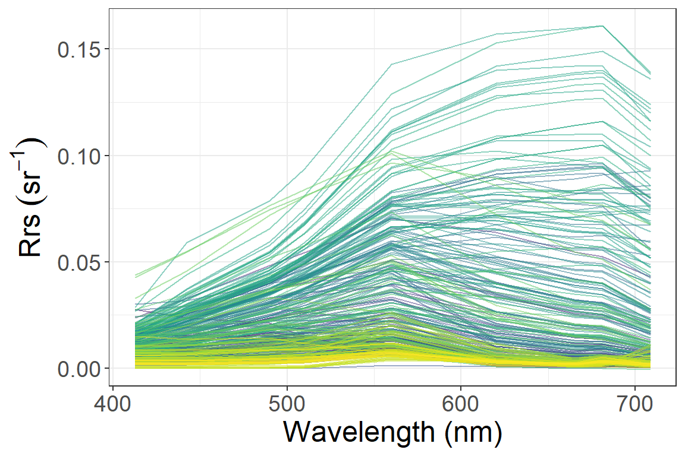
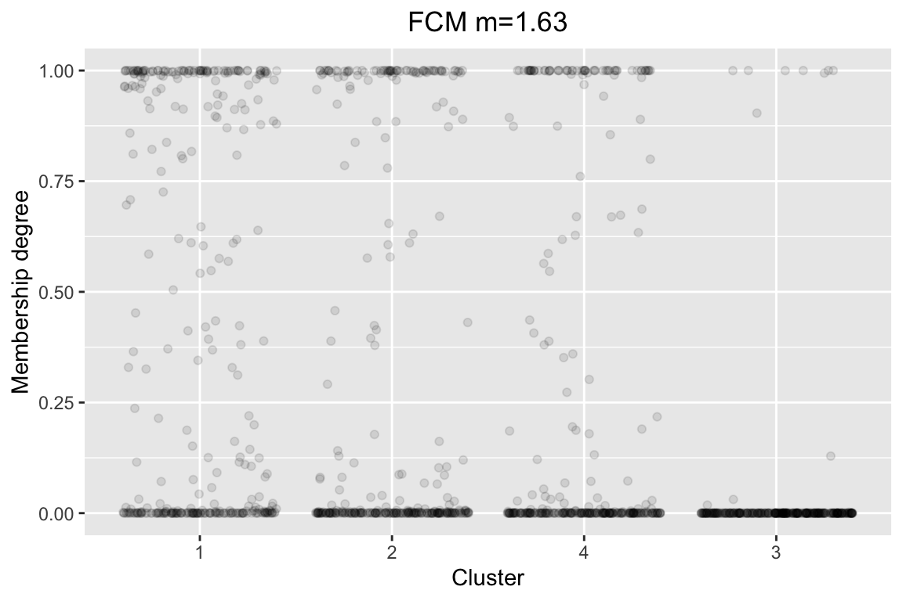

How to train the fuzzy cluster?
Shun Bi
2020-05-25
Source:vignettes/Fuzzy_cluster_training.Rmd
Fuzzy_cluster_training.RmdLists of vignettes showing how to use FCMm
Dear users, the four vignettes of FCMm were provided in this package to demonstrate the usage and application to obtain the cluster number, to train the user-defined data set, to apply the default FCMm to new data (such as Chla concentration estimation), and the imagery data.
Here are the step-by-step demos:
Preparing the data set
Just same to vignette Cluster_number_determination.Rmd, this one shows how to use the FCMm package to train the fuzzy cluster about your data set (suppose the cluster number is obtained before). Here we use our demo data Nechad2015 (resampled to 100 in number) and suppose the optimized cluster number is 4.
Note: we also need package tidyverse to string and data processing.
Dataframe process
rm(list=ls())
library(FCMm)
library(ggplot2)
library(magrittr)
library(stringr)
library(dplyr)
data("Nechad2015")
w <- Nechad2015 %>% names %>%
str_extract(.,pattern="\\d") %>%
is.na %>% {!.}
wv <- w %>% names(Nechad2015)[.] %>%
gsub('X','',.) %>% as.numeric
x <- w %>% Nechad2015[,.]
set.seed(1234)
w_sample <- sample_n(seq(nrow(x)) %>% data.frame, 100) %>% as.matrix %>% c
x <- x[w_sample,]
names(x) <- wv
rm(w)Spectra plot
After that, we subset Rrs dataframe (named x) and wavelength vector (named wv). It is time to plot the spectra of this set by using function plot_spec_from_df.
Note: The input of plot_spec_from_df should be a matrix or data.frame with colnames that could be transformed into the numeric — as the x-axis of the plot. Since the return of plot_spec_from_df is a ggplot list, you could modify or add it for your purpose (such as add labs or themes).
p.spec <- plot_spec_from_df(x) +
labs(x='Wavelength (nm)',y=expression(Rrs~(sr^-1))) +
theme_bw() +
theme(legend.position='none', text=element_text(size=18))
print(p.spec)
FCM running
Before optimizing the best cluster number, we have to obtain an FD list produced by function FuzzifierDetermination just as follows.
library(ppclust)
FD <- FuzzifierDetermination(x, wv, stand=F)
(FD$m.used)
#> [1] 1.63
nb <- 4
set.seed(54321) # I just set this seed so that you can re-produce them
result <- FCM.new(FD, nb, fast.mode = T)
summary(result)
#> Length Class Mode
#> FD 9 -none- list
#> res.FCM 17 ppclust list
#> p.jitter 9 gg list
#> K 1 -none- numeric
#> plot.jitter 1 -none- logical
#> fast.mode 1 -none- logical
result$p.jitter + theme(text = element_text(size=13))
The used m value is 1.63 which is less than the default 2. The reason and its benefits should be a view from the reference of package FCMm, i.e., Bi et al. (2019).
result list contains several result by FCM.new:
-
FD: the return list by function
FuzzifierDetermination -
res.FCM: the optimized FCM result generated by functions in package
ppclust - K: cluster number
-
plot.jitter: logic value for the option of doing jitter plot by package
ggplot2 - fast.mode: logic value for choosing whether to use fast mode
Qualitatively, the disturbing points of membership value are mainly distributed between 0 and 1 which should be the correct distribution of membership value. This is in line with our demand for fuzzy clustering of water spectra which finds a good compromise between the need to assign most spectra to a given cluster, and need to discriminate spectra that classify poorly.
FCM plotting — basic version
This part shows how to obtain the visualization results in the package FCMm.
Function plot_spec is used for spectral plotting the related FCM-m result.
if(library('cowplot', logical.return = T)){
library('cowplot')
}else{
install.packages("cowplot")
library('cowplot')
}
p.spec <- plot_spec(result, show.stand=T, HABc=NULL)
print(p.spec$p.cluster.spec)

Short result analysis
The plot Nechad2015: Normalized cluster result shows great work. The normalized Rrs spectra rather than the raw were presented here since I gonna focus more on the shape of the water spectra which is mainly affected by the phytoplankton (i.e., denoted as Chla concentration shown in the boxplot). The higher the Chla concentration, the higher reflectance of water near 700 nm and the lower near-visible range (as we know the absorption of pigment will lead to the reduction of light).
Of course, there should be more applications of this cluster in the future, especially the accuracy, rationality, and applicability of the results, especially in the aspect of Chla concentration classification inversion. I will not repeat it here.
If you have any question about FCMm, please contact me without hesitation by email at bishun1994@foxmail.com
Hope you enjoy the journey using FCMm!